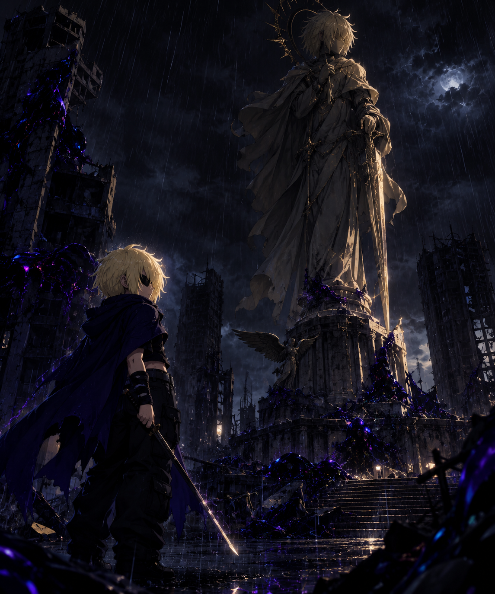

especie: vasija.
edad: +40-45 añoss(a nivel de física, lo que para Neptuno es un año, para la tierra son 165 años y en Mercurio serian unos 684 años, vean interestelar para entender este concepto que saque de la relatividad).
estatura: 2.09m (un enano).
estado: unificado con el vacío (The All Lordss).
Habilidades: alma sombría, oscuridad descendente, chillido del abismo, garra escaladora, corazón de cristal, lágrima de Isma, las artes del aguijón, concentración, alas del monarca.
Familia: Rey Gabriel (padre), Emily Agreste (madre), el recipiente puro (hermano), Vel (media hermana), niño de Jen (¿hijo?).
mente: no tiene
voz: es mudo
Voluntad: no tiene (.../..//-/.././-./.)
"..."
"Sin mente para pensar. Sin voluntad que quebrar. Sin voz que grite de sufrimiento. Nacido de Dios y el vacío. Eres el receptaculo. Eres el Caballero del vacío."
